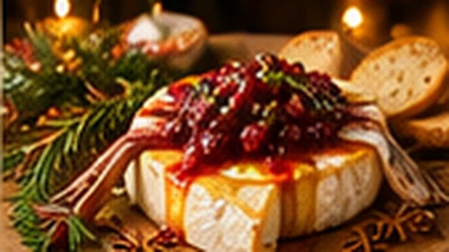
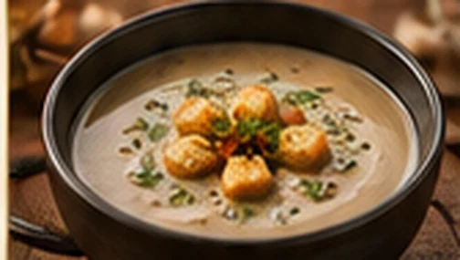
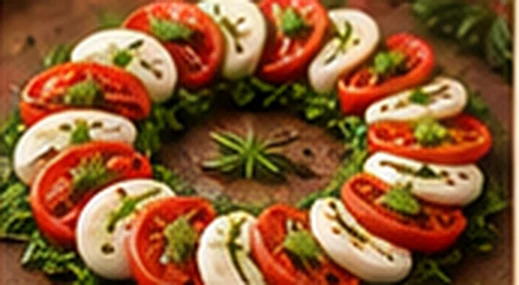
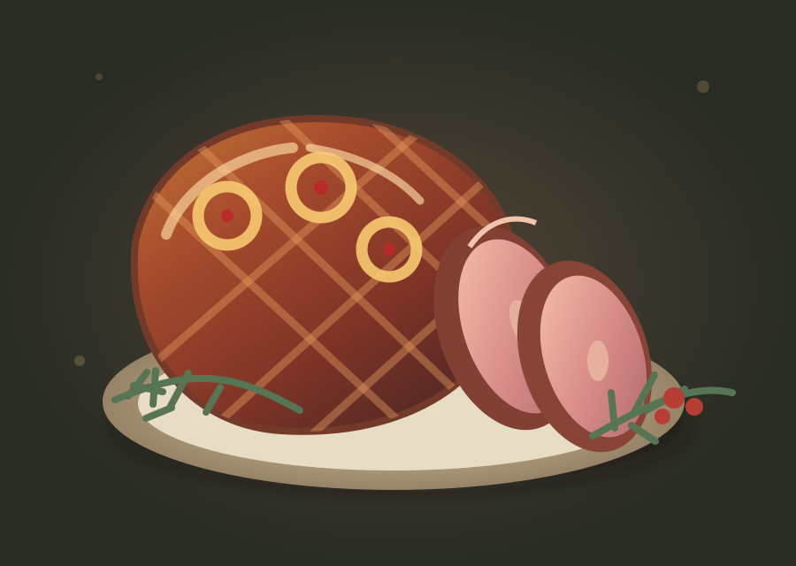
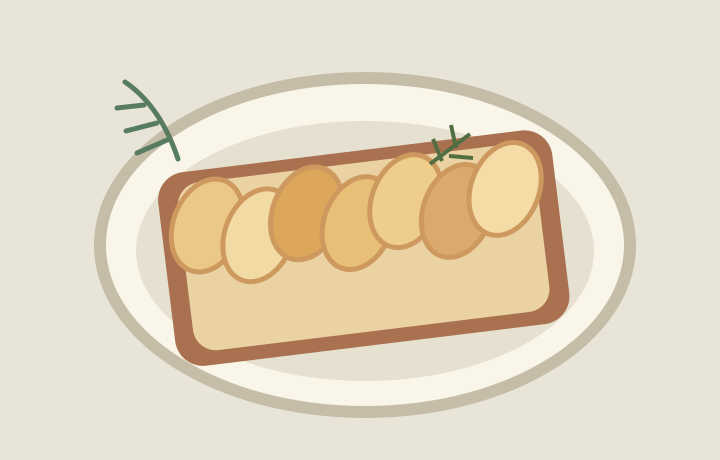
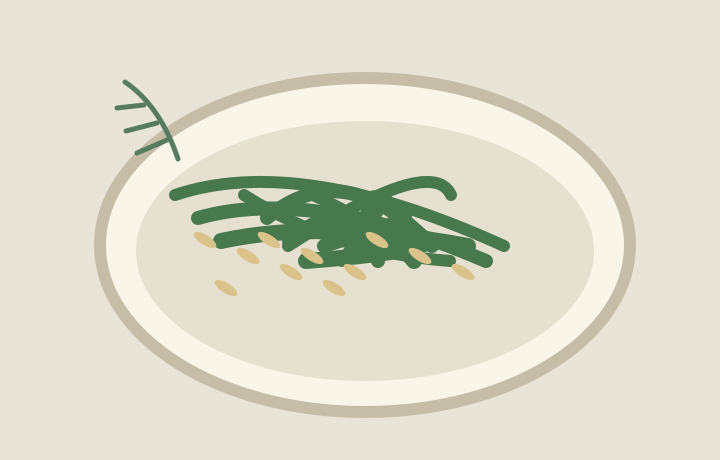
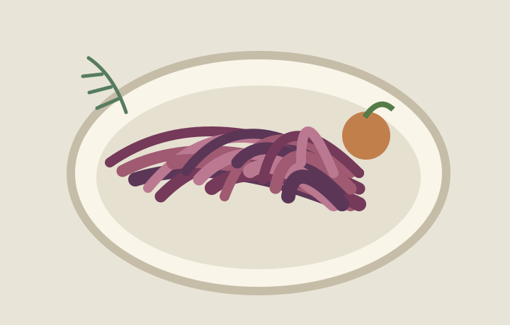

A little guide
to our first
Christmas dinner.
All the recipes, all the little details, and a plan to spend less time worrying and more time cooking together.
Our little
cooking plan.
We can do most of the work the day before. The goal is a slow, happy Christmas together, not a kitchen marathon.
Make room for the good stuff.
Prepare the mango float trifle, cook the braised red cabbage, finish the dauphinoise, and mix the ham glaze. Chill everything safely.
A little prep, together.
Warm the ham following its pack instructions. Make the soup or reheat a pre-made batch. Lay out tomatoes, mozzarella and basil.
Finish, plate, enjoy.
Bake the Brie just before eating; assemble the Caprese at serving time; reheat the dauphinoise, and sauté the Baguio beans last.
Every dish,
step by step.
Choose a recipe to see the ingredients and instructions. Tick ingredients off as you go.
01
COURSE I · STARTERBaked Brie with Cranberry & HoneyServe as soon as it comes out of the oven, with warm toasted pandesal.20 minutes
02
COURSE II · SOUPRoasted Garlic & Mushroom SoupA small, cosy serving so there is still room for the main event.45–50 minutes
03
COURSE III · SALADChristmas Caprese WreathA refreshing little break before the ham and dauphinoise.10 minutes
04
COURSE IV · MAINPineapple, Orange & Honey Glazed HamA classic Noche Buena favourite, dressed for a Christmas table for two.45–75 minutes*
S1
SIDE · MAIN COURSEGarlic & Thyme Potato DauphinoiseCreamy layers of potato with a little garlic and thyme, baked golden.65–80 minutes
S2
SIDE · MAIN COURSEAlmond Butter Baguio BeansSomething crisp and green to balance the rich ham and potatoes.12–15 minutes
S3
SIDE · MAIN COURSEBraised Red Cabbage with ApplesGently tangy and sweet, a classic British Christmas side.45–55 minutes
05COURSE V · DESSERTChristmas Mango Float TrifleFilipino mango float meets an elegant Christmas trifle.20 minutes + chilling
D01Welcome drinkClassic Mulled WineAlcohol-free: use red grape juice with a splash of orange juice.FOR TWO
D02Festive alternativeApple & Rosemary Mulled White WineAlcohol-free: use apple juice and a little sparkling white grape juice.FOR TWO
D03With the main courseRosemary & Calamansi FizzNaturally alcohol-free.FOR TWO
D04After dessertHoney Lemon Hot ToddyLovely without whisky, too.FOR TWO
✳ Made with love, in the Philippines.
The Christmas
shopping list.
0 items checked
Fresh produce
Dairy & bakery
Ham & pantry
Christmas drinks
Brie, mascarpone and cranberry sauce may need a larger supermarket. Camembert, whipped cream with cream cheese, or tart berry jam can work as substitutes. Make sure the ham is labelled fully cooked; raw ham needs different cooking instructions.